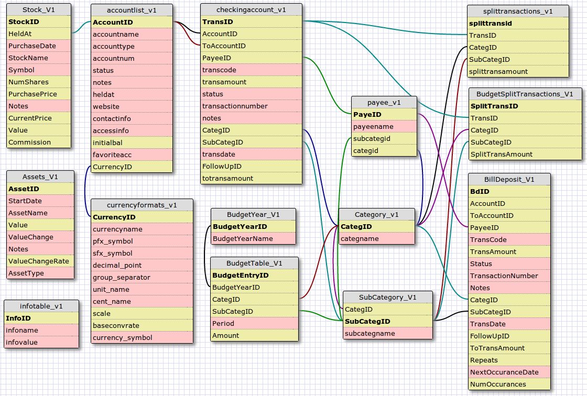

Custom SQL Reports |
Custom SQL Reports allow the user to create a unique report to suit the user. The Custom SQL Reports Manager is used to write an SQL script that can communicate directly with the database. This script is added to the navigation tree of MMEX using a Script Heading. A Heading can also be added without an associated script, to allow scripts to be set up in sections.
The Custom SQL Reports Manager Interface has the following features:
|
Report Title |
This is used to give the
script a Title. |
|
Heading |
A
Heading can be added without an associated script. When Checked: Allows a title to be used as a Heading in the navigation tree. |
|
Sub-Menu |
When Checked: The navigation tree will set the title as a sub-menu under the previous menu item. The menu item is not necessarily a heading. |
|
SQL Source Script Text Field |
This is where the script details can be written. |
|
Open Button |
Load an existing script from a file. |
|
Save Button |
Allows the user to save the SQL
script to the existing file or a new file. |
|
Run Button |
Allows the script to be
executed without closing the dialog. |
|
Clear Button |
Clears the SQL Source Script area only. |
|
Close Button |
Closes the dialog without
saving. |
Once the script is created, and saved in MMEX, the report can be easily accessed via the Navigation Tree.
The creation of a new Custom SQL Report is via:
The menu item: Tools –> Custom SQL Reports
The icon on the toolbar.
This action will open the Custom SQL Reports Manager dialog, and allows the user to directly write a script and save it as a file.
Useful Custom SQL Scripts are also available from the MMEX Forum on the Internet, which can be accessed as follows:
Use the menu option: Help –> Report Issues or Feedback
Search the forum heading: Custom SQL Report Scripts
Recommendations:
For new scripts, use a useful title for your report.
Save the script before running in the Custom
SQL Reports Manager.
Note: Script errors may
result in loss of your script if not saved first.
Use the pop-up menu on the navigation tree to edit the file if necessary.
Note:
All script titles are saved in an index file called: CustomSQLReportIndex.txt
Custom SQL Reports can be remove by deleting the index file.
Reports can be reorganized by directly modifying the index file if necessary.
Reports created by the Custom Reports Manager, will be permanently recorded in the Navigation Tree. The report is given a name when the report is saved. By using the report title, the user can:
Run the report
Edit the report
Delete the report.
A report title can be saved without an SQL script file attached. This is used as a title for grouping scripts together. The navigation tree then behaves similar to the standard reports. Reports can only be nested one level deep.
In order to create script files,
we need to understand the underlying structure of the database. This
structure is displayed as follows:
|
Basic Structure of MMEX |
|
 |
Table Information
The diagram above, shows the table names with their associated fields. Table links shows the associations that connect the tables via the table's primary index field.
|
Table Names |
Table Description |
|
InfoTable_V1 |
This contains settings specific to the database. |
|
CurrencyFormats_V1 |
Contains the Currency values for the database |
|
AccountList_V1 |
Contains all the account names, and data specific to an account. |
|
Payee_V1 |
Contains all payees, and the last category this payee used. |
|
Category_V1 |
This is a list of all the categories in the system |
|
SubCategory_V1 |
This is a list of all the sub-categories in the system |
|
CheckingAccount_V1 |
This is the main table where all the transactions are maintained. |
|
SplitTransactions_V1 |
Contains the data associated with Split Transactions |
|
Stock_V1 |
Used for Stocks, and is linked to table: AccountList_V1 using the Held At field |
|
Assets_V1 |
Contains all asset details |
|
BudgetYear_V1 |
The specific year for a budget. |
|
BudgetTable_V1 |
Budget details |
|
BudgetSplitTransactions_V1 |
Split Transactions for budgets |
|
BillDeposit_V1 |
This contains all the details for Repeating Transactions. Similar to table: CheckingAccountV1 |
|
MMEX Initialization Table |
|
|
mmexini.db3 |
This table contains the settings for MMEX. These settings are used to initialize MMEX at system start-up. |
|
Table View |
Special table definition known as a View |
|
AllData |
This view joins (almost) all data from CheckingAccount_V1,
AccountList_V1, Payee_V1, (sub)category_V1 and CurrencyFormats_v1
tables. |
Table View: AllData
MMEX creates a special view called AllData. This view can
easily be used by SQL Scripts to create specialized reports that
users may require without having to create complicated scripts.
For
more information use the SQL Command: select * from AllData;
For closer inspection, a script file can be created to view the
data in each table using the following SQL Command:
select *
from <table_Name>
where <table_name> is one of
the table names above.
Table Views
SQL has the ability of creating virtual table definitions from existing tables. These virtual tables, called Views, use the data from the original base tables, and can be used in reports like tables. The SQL command for creating a view is:
create view <VIEW_NAME> as <SQL STATEMENT>;
Where:
<VIEW_NAME> is the name of the
view.
<SQL_STATEMENT> is the SQL statement that defines the
view.
Example:
create view budget as
select * from
BudgetYear_V1 BY, BudgetTable_V1 BT, Category_V1 C, SubCategory_V1
SC
where BY.BudgetYearID = BT.BudgetYearID and BT.CategID =
C.CategID and BT.SubCategID = SC.SubCategID;
To inspect the view, use the SQL
command: select * from Budget;
To remove the view use the
SQL command: drop view Budget;
Attempting to teach SQL programming is beyond the scope of this help file, but the following is a quick guide into understanding scripts, and possibly creating your own scripts if required.
In creating scripts, the main command we would tend to use is the SELECT statement.
The basic format is:
|
SELECT <name> |
<name> represents the field names of the table, or * for all names. |
|
FROM <table> |
<table> represents the table or tables the command is aimed at. |
|
WHERE <condition is met> |
[optional] here we test for some condition. |
|
ORDER BY <parameter> |
[optional] sorts the output by this parameter |
Examples:
SELECT * FROM
AccountList_V1;
* This would display all fields for the table:
AccountList_V1
SELECT AccountName, Status
FROM AccountList_V1 where AccountType = “Term”;
*
This would display the Term Account names and the account status from
table: AccountList_V1
Here we describe a more
complex script:
|
Although this script is useless, it demonstrates some basic principles. |
|
select
pT.PayeeName payee, |
In this example we see the
table name is: payee_V1 and the field name is PayeeName
In
the FROM clause we see the table name: payee_V1 pT
*
Here the pT at the end, acts as an alias for the table name.
Now in the SELECT we see:
pT.PayeeName
payee
* The pT. is used to state the table that
owns the field PayeeName
* The payee at the end, is an
alias for the table.fieldname combination
We can separate
table names and field names with commas, as we see more tables and
fields in this example.
In the WHERE clause, we
see: pT.categID = cT.categID
* Here we test to make sure the two
fields are the same in both tables.
Now in the ORDER BY clause, we can now use the simplified name of payee we defined in the SELECT clause.
I hope this short introduction takes the mystery out of the script files as seen in the MMEX Forum in the Custom SQL Report Scripts section.